基于分布式HBase的数据分析
实验环境
Ubuntu 14.04
实验设备
- 三台阿里云 CentOS 轻量级服务器
- Xshell 终端模拟软件
- WinSCP 文件操作软件
实验内容
- Ubuntu下Java, Hadoop与HBase的安装及伪分布式的部署；
- 使用Java API对HBase进行基本操作 ；
- 基于Hadoop实现MapReduce；
- 使用 TensorFlow 框架，对摩拜单车数据集的经纬度进行分析，并可视化。
HBase 简介
HBase是一个构建在HDFS上的分布式列存储系统；
HBase是基于Google BigTable模型开发的，典型 的key/value系统；
HBase是Apache Hadoop生态系统中的重要一员，主要用于海量结构化数据存储；
HBase是一个分布式的、面向列的开源数据库，该技术来源于 Fay Chang 所撰写的Google论文 “Bigtable：一个结构化数据的分布式存储系统”。就像Bigtable利用了Google文件系统（File System） 所提供的分布式数据存储一样，HBase在Hadoop之上提供了类似于Bigtable的能力。
HBase是Apache 的Hadoop项目的子项目。HBase不同于一般的关系数据库，它是一个适合于非结构化数据存储的数据 库。另一个不同的是HBase基于列的而不是基于行的模式。
分布式Hbase协调工作说明
zookeeper
1.保证任何时候，集群中只有一个master
2.存贮所有Region的寻址入口
3.实时监控Region Server的状态，将Region server的上线和下线信息实时通知给Master
4.存储Hbase的schema，包括有哪些table，每个table有哪些column family
master
1.为Region server分配region
2.负责region server的负载均衡
3.发现失效的region server并重新分配其上的region
4.GFS上的垃圾回收
5.处理schema更新请求
Region server
1.Region server 维护Master分配给它的region，处理对这些region的IO请求。
2.Region server 负责切分在运行过程中变得过大的region。 可以看到，client访问hbase上数据的过程并不需要master参与（寻址访问zookeeper和region server，数据读写访问region server）, master仅仅维护着table和region的元数据信息，负载很低。
环境配置
安装 Java
安装 JRE
1
sudo apt-get install default-jre
安装 OpenJDK
1
sudo apt-get install default-jdk
安装 OracleJDK
1
2
3
4sudo add-apt-repository ppa:webupd8team/java
sudo apt-get update
sudo apt-get install oracle-java8-installer
sudo apt-get install oracle-java8-set-default安装 SSH
在 Hadoop 运行过程中，主从机之间是通过SSH进行通信的，所以需要对所有主机进行SSH的安装和配置 工作。
安装ssh
1
sudo yum install openssh-server
使用下面的命令来查看SSH是否安装成功
1
ps -e | grep ssh
配置免密登录 SSH
在master主机上进行如下操作：
1
ssh -keygen -t rsa
将公钥（
~/.ssh/id_rsa.pub中的内容）复制到文件authorized_keys中去。1
cat ~/.ssh/id_rsa.pub >> ~/.ssh/authorized_keys
将 master 上的
~/.ssh/authorized_keys通过 scp 命令复制到从机 slave1,slave2 中去。但发现通过ssh命令仍不能实现三台主机之间的免密登录，查阅资料我们知道：ssh对目录权限有要求， 代码中要设置新生成的config文件75，其中~目录权限值为750，~/.ssh的是700，~/.ssh/*是600，因此 我们需要给它赋值600，执行如下命令：
1
chmod 600 .ssh/authorized_keys
安装 Zookeeper
选择一个版本的 Zookeeper 进行下载安装，用 winSCP 将文件传到服务器根目录下，执行命令：
1
scp zookeeper-3.5.6-bin.tar.gz hadoop@47.101.139.207:~/
进入服务器根目录下，将zookeeper-3.5.6-bin.tar.gz解压至 /usr/local/cluster中。
1
tar -zxvf ~/zookeeper-3.5.6-bin-tar.gz -C /usr/local/cluter/
这里解压之后形成的文件夹名为zookeeper-3.5.6，为了方便后续操作，我们将之改名为zookeeper 设置环境变量，在
~/.bashrc中添加如下内容：1
2
3#zookeeper
export ZOOKEEPER=/usr/local/cluster/zookeeper
export PATH=$PATH:$ZOOKEEPER/bin使环境变量生效，并为 zookeeper 配置数据和日志文件：
1
source ~/.bashrc
当三台主机全部配置完成之后，尝试启动zookeeper：
1
/usr/local/cluster/zookeeper/bin/zkServer.sh start
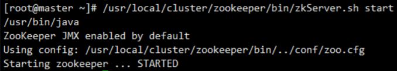
查看 zookeeper 启动状态
1
/usr/local/cluster/zookeeper/bin/zkServer.sh status
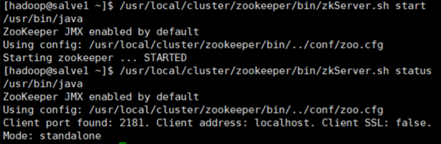
发现 error contacting 经过研究发现，在zoo.cfg配置文件中加上如下一行代码，即可解决：
1
quorumListenOnALLIPS=true
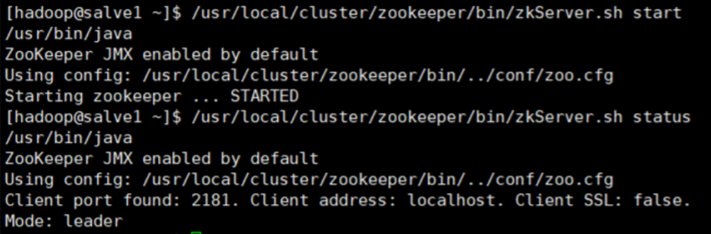
完成配置
安装 Hadoop 和 HBase
基本过程与安装 zookeeper 相似，在此省略。
在hadoop的配置过程中由于java的问题，要注意我们JAVA_HOME的环境变量路径：
1
2
3
4#java
export JAVA_HOME=/usr/lib/jvm/java-1.8.0-openjdk
export PATH=$JAVA_HOME/bin:$PATH
export CLASSPATH=.:$JAVA_HOME/lib/dt.jar:$JAVA_HOME/lib/tools.jar接下来进行伪分布式的配置。Hadoop可以在单节点上以伪分布式的方式运行。Hadoop进程以分离的Java进程来运行。需要对hadoop/etc/hadoop中的两个配置文件进行修改。
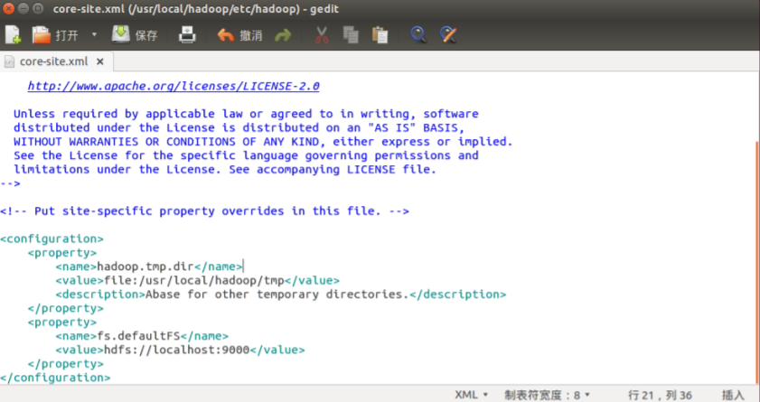
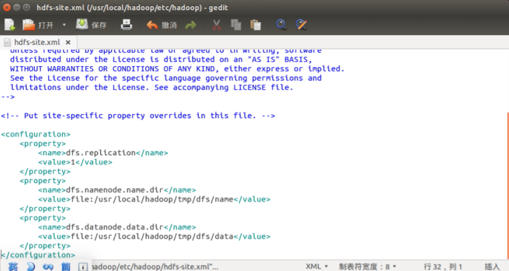
修改完成后对NameNode进行格式化
1
./bin/hdfs namenode -format
启动 hadoop：
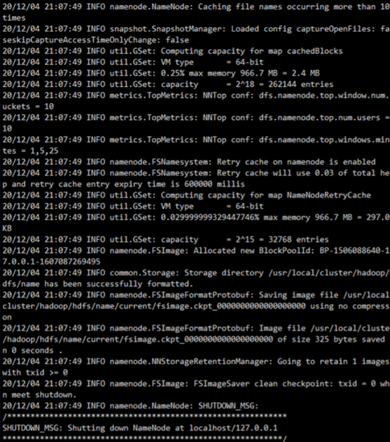
用 jps 判断是否启动成功
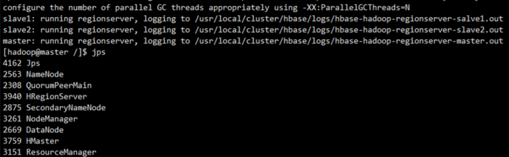
可以看到，出现 NameNode, DataNode 和 SecondaryNameNode 三个进程，说明启动成功。
在 50069 端口可以查看节点信息
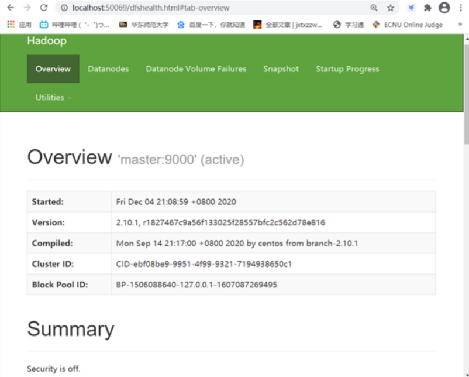
通过16010端口查看 HBase 运行情况
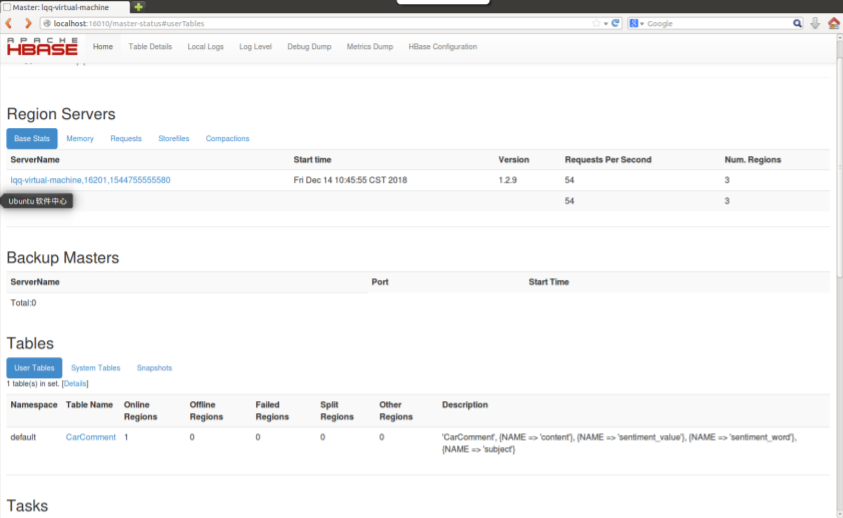
数据导入
使用Hbase Shell导入数据：
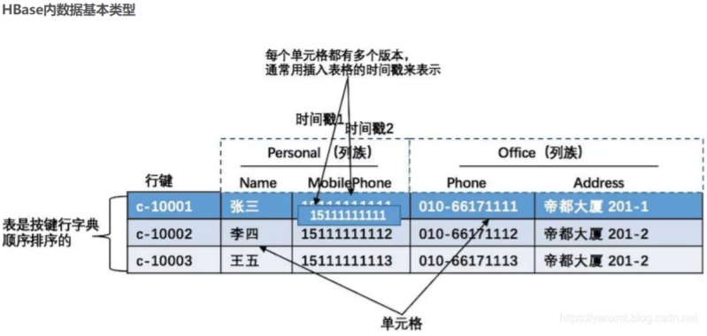
在 HBase 内, 数据按照 <行键><列族1: 列1-1, 列1-2><列族2: 列2-1, 列2-2> 这样的类型进行存储的。且, 其一, 其中行键的排列顺序是按照字典顺序排序的, 这点对于搜索非常重要。其二, 同一行键的相同列族中列的值, 是可能变化的, 并且按照时间戳进行排序的(当然, 有些数据在合并的时候, 会被删除) 。其中, 相应的模块知识, 如下所示:
Row Key
Row Key, 行键. 是用来检索记录的主键. 访问HBase Table中的行, 主要有三种方式. 单个row key 进行访问 / 通过 row key 正则匹配 / 全表扫描 . Row Key 的值可以是任意字符串(最大长度为64KB, 实际使用经常为10-100byte) .其中, 行键的排列顺序是按照字典顺序排序的, 这点对于搜索非常重要. (PS: 字典顺序:1 10 12 6 7 9中,11排在9之前.)Columns Family
Columns Family 列族. HBase 内的每个列, 都属于一个列族. 列族是 Schema 一部分(即表设计), 而 列不是(列可以在插入数据时, 动态添加). 列族是需要在使用之前进行提前定义的. 列名都以列族为前缀, 如course:namecourse:age.Cell
Cell, 数据单元. 有唯一确定的单元. Cell 内的数据是没有类型的, 全部都是字节码进行存储的.Time Stamp
每个 Cell 存储一个数据的多个版本. 版本号, 通过时间戳进行索引(时间精确到毫秒). 时间戳类型为 64位整数类型. 时间戳按照时间类型倒叙排序.
回收版本机制:
<保存数据的最后n个版本> / <保存最近一段时间的版本(如最近七天)>
操作流程
将服务器本地文件(.csv)上传到hdfs的根目录下,然后导入数据到hbase
进入hbase shell 创建表 bicycle,列族为info
执行文件导入（Hadoop用户中执行）
格式：hbase [类] [分隔符] [行键，列族] [表] [导入文件] （默认分隔符为空格）
导入完成后，可以使用 scan 来查看是否导入成功
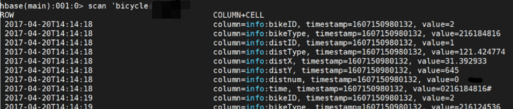
数据分析
对数据清洗之后得到若干组经纬度坐标，对坐标进行聚类，采用以下四种算法：
K-Means (K均值) 聚类
步骤：
(1) 选择一些类/组，并随机初始化它们各自的中心点。中心点是与每个数据点向量长度相同的位置（需 要提前预知类的数量，即中心点的数量)。
(2) 计算每个数据点到中心点的距离，数据点距离哪个中心点最近就划分到哪一类中。
(3) 计算每一类中中心点作为新的中心点。
(4) 重复以上步骤，直到每一类中心在每次迭代后变化不大为止。也可以多次随机初始化中心点，然后 选择运行结果最好的一个。
优点：
(1) 速度快
(2) 计算简便
缺点：
(1) 需要提前知道数据有多少类
(2) 摩拜单车数据量庞大，并不知道一共可以分成多少类，存在一定误差，但在中小规模数据下可以适 用。
均值漂移聚类
步骤：
(1) 确定滑动窗口半径r，以随机选取的中心点C半径为r的圆形滑动窗口开始滑动。均值漂移类似一种爬 山算法，在每一次迭代中向密度更高的区域移动，直到收敛。
(2) 每一次滑动到新的区域，计算滑动窗口内的均值来作为中心点，滑动窗口内的点的数量为窗口内的 密度。在每一次移动中，窗口会想密度更高的区域移动。
(3) 移动窗口，计算窗口内的中心点以及窗口内的密度，知道没有方向在窗口内可以容纳更多的点，即 一直移动到圆内密度不再增加为止。
(4) 步骤一到三会产生很多个滑动窗口，当多个滑动窗口重叠时，保留包含最多点的窗口，然后根据数 据点所在的滑动窗口进行聚类。
优点：
(1) 不需要设定一共有多少组
(3) 受均值影响小
缺点：
r 的选择可能并不重要，在本次实验中并没有好的预期效果。
基于密度的聚类方法 (DBSCAN)
步骤：
(1) 首先确定半径 r 和 minPoints。从一个没有被访问过的任意数据点开始，以这个点为中心，r 为半径 的圆内包含的点的数量是否大于或等于 minPoints，如果大于或等于 minPoints 则改点被标记为 central point ,反之则会被标记为 noise point。
(2) 重复 (1) 的步骤，如果一个 noise point 存在于某个 central point 为半径的圆内，则这个点被标记为 边缘点，反之仍为 noise point。重复步骤 ，直到所有的点都被访问过。
优点：
不需要设定一共有多少组。
缺点：
需要频繁改动距离 r 和 minPoints，来获得较好的预期效果。
用高斯混合模型（GMM）的最大期望（EM）聚类
步骤：
(1) 选择簇的数量 (与K-Means类似) 并随机初始化每个簇的高斯分布参数 (均值和方差) 。也可以先观察 数据给出一个相对精确的均值和方差。
(2) 给定每个簇的高斯分布，计算每个数据点属于每个簇的概率。一个点越靠近高斯分布的中心就越可 能属于该簇。
(3) 基于这些概率我们计算高斯分布参数使得数据点的概率最大化，可以使用数据点概率的加权来计算 这些新的参数，权重就是数据点属于该簇的概率。 重复迭代 (2) 和 (3) 直到在迭代中的变化不大。
优点：
(1) 使用均值和标准差，簇可以呈现出椭圆形而不是仅仅限制于圆形
(2) 使用概率，所有一个数据点可以属于多个簇
缺点：
目的为确认单车的密度分布，并不太适用此算法。
代码示例
1 | # -*- coding: utf-8 -*- |
数据可视化
对聚类出的经纬度数据聚类后，为了方便检测聚类结果，我们直接采用 python 的 matplotlib 库以经 纬度为坐标画出聚类结果，但发现这种方式对于聚类结果的显示并不是很直观，无法发现聚类结果和实 际地形的关联。于是想到使用高德地图的 API，希望可以将聚类结果直接在实际的地图上投影，在参阅 了高德地图官方 API 实例之后，发现其提供的海量点，点聚合可以实现我们的需求。申请成为高德地图 开放平台的个人开发者，得到 key，然后利用其中的 API 进行可视化。如下图所示：
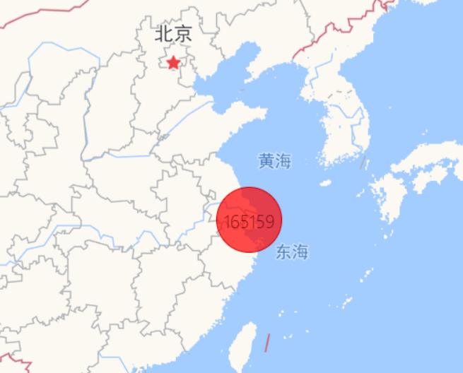
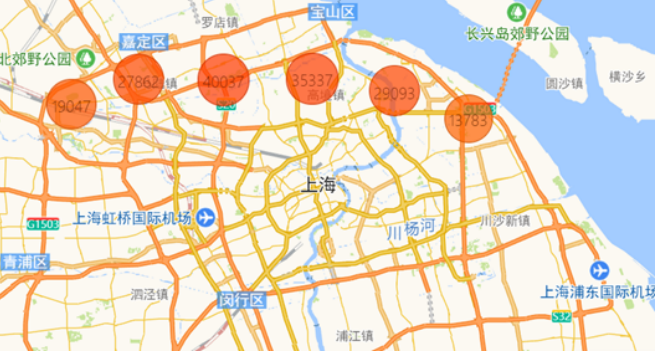

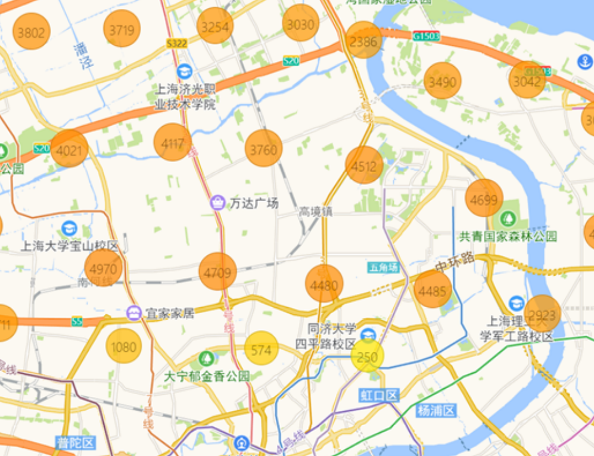
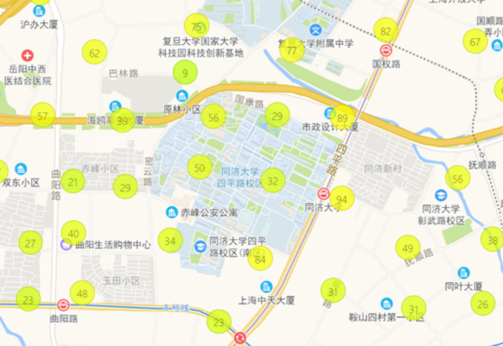
可视化后可以发现上海区域地图上呈现若干密集点，通过调整地图的大小，可以调整密集点的大小， 根据需求可以知道不同区域摩拜单车的密集度。这些密集度说明哪些区域会使用更多的摩拜单车，为了 符合人们用车需求应当调整不同区域摩拜单车的数量，才能更好地满足人们的需求。
代码如下：
1 |
|
代码地址：